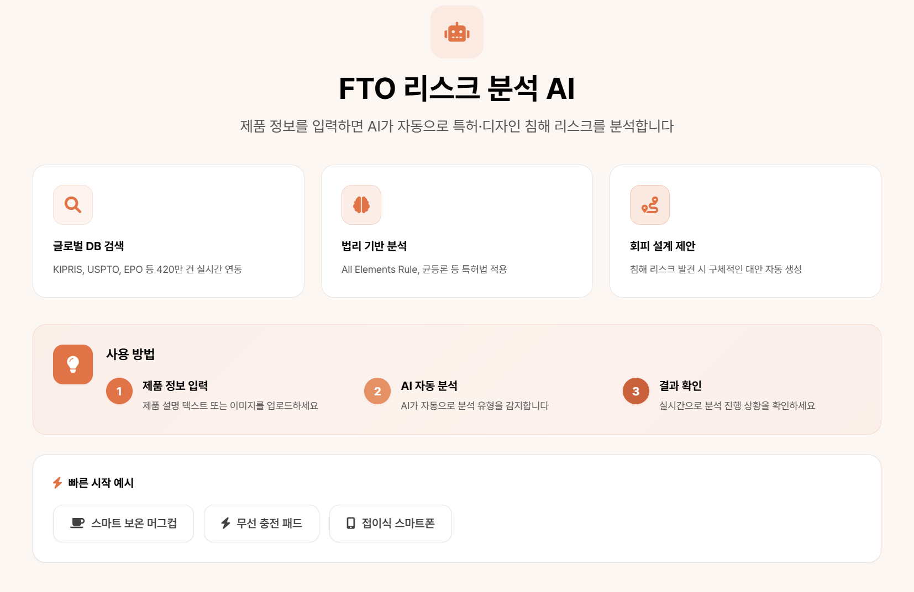

실험적인 FTO 분석 도구
FTOGuard는 제품 기획 초기 단계에서 발생할 수 있는 Freedom-to-Operate(FTO, 특허 침해 가능성) 리스크를 누구나 손쉽게 점검할 수 있도록 돕는 차세대 AI 도구입니다.
우리는 제품 설계가 완료된 후 리스크를 발견하여 발생하는 막대한 수정 비용과 출시 지연 문제를 해결하고자 합니다. 제품 또는 기술 아이디어를 입력하면 AI 에이전트가 잠재적 충돌 가능성을 구조적으로 정리해 드립니다.

FTOGuard가 제공하는 가치
개발 방향 조정
초기 단계에서 리스크를 인지하여 불필요한 개발 리소스 낭비를 사전에 방지합니다.
직관적 결과 제공
복잡한 특허 문헌 대신 핵심 쟁점 위주의 정리된 리포트로 빠른 의사결정을 돕습니다.
효율적 전문가 상담
변리사 등 법률 전문가와 상담 전 기초 자료를 정리하여 상담 효율성을 극대화합니다.
이런 분들을 위해 설계되었습니다
스타트업
출시 전 빠른 리스크 점검이 필요한 신사업 팀
중소기업
초기 IP 검토 비용과 시간을 단축하고 싶은 제조사
R&D 담당자
기술 기획 단계에서 선행 기술 조사가 필요한 연구원
변리사
고객 상담 전 1차 분석 자료가 필요한 전문가
법적 고지 및 한계 Important
FTOGuard는 정식 법률 자문이나 최종적인 특허 침해 판단을 대체하지 않습니다.
중요한 비즈니스 결정 전에는 반드시 변리사 또는 특허 전문 변호사와 상담하시기 바랍니다.
준비되셨나요?
지금 바로 첫 스캔을 시작하세요
FTO 분석 한 번이면, 오늘 놓치고 있는 특허 리스크가 보입니다.